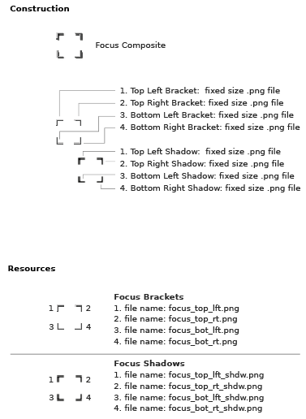

LZX Reference
filename: basefocus.lzx in "base" directory
Focus is the visual component of keyboard navigation. Keyboard navigation allows the components to be used without a mouse. The tab key activates focus and moves between components in an application, the arrow keys enable selection within a component and the enter key or spacebar activates the selection. Focus appears as four brackets which adjust their dimension to surround the selected component. The brackets animate between objects as the tab key is pressed and disappears after a few seconds. Focus is enabled by default and has automatic awareness of included components and their position within an application.
Focus is defined by eight pieces:
1-4. The corner brackets
5-8. Shadows of the corner brackets
The bracket edges are two pixels thick (light and dark rows), enabling contrast against most background colors. Small drop shadows give the illusion that the brackets are floating slightly above the selected component. Focus has only one state, and can be disabled.
